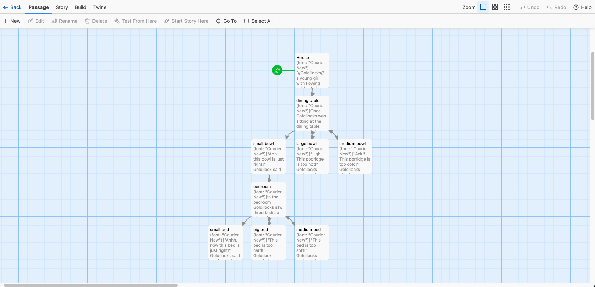

The Meal
A branching story about what to cook for a visiting friend.

- Genre
- Interactive Fiction
- Tools
- Twine
- Team
- Solo project
- Role
- Writer, Designer, Programmer
overview
The Meal is a short interactive fiction game created in Twine where players prepare dinner for a visiting friend. Players choose between making homemade pasta or vegetable curry, then explore the pantry to select ingredients for their dish.
As the story progresses, players make additional decisions about how to prepare their meal, from carefully stirring to experimenting with different flavors. These choices influence the narrative and determine how their friend reacts to the finished dish. The project explores how branching narratives and player choices can create different experiences within a simple, everyday scenario.gameplay video
design process
1. Initial Ideas/Playtesting and Changes
- Started by exploring Twine and learning how to organize passages and connect them through branching links. Created test scenarios such as branching using the Goldilocks story to practice creating different paths and endings.
- Developed a simple cooking scenario with two main paths: homemade pasta and vegetable curry.
- Experimented with conditional logic to make certain dialogue and story outcomes depend on the player's decisions.

what i did
- Designed and wrote the story, dialogue, and branching narrative.
- Built the game's passage structure and navigation using Twine.
- Implemented variables and conditional logic to track the player's dish and ingredient selections.
- Created multiple cooking interactions that allow players to influence the progression of the story.
what i learned
Through this project, I learned how to use Twine to create interactive stories and how player decisions can influence the progression of a narrative. I became more familiar with organizing passages, creating branching paths, and using variables to keep track of player choices.
One of the biggest challenges was implementing conditional logic. I experimented with Harlowe macros for the first time and used (set:), (if:), and (else:) to create outcomes that respond to the player's ingredient selections. Debugging these conditions also helped me better understand how variables and arrays work.